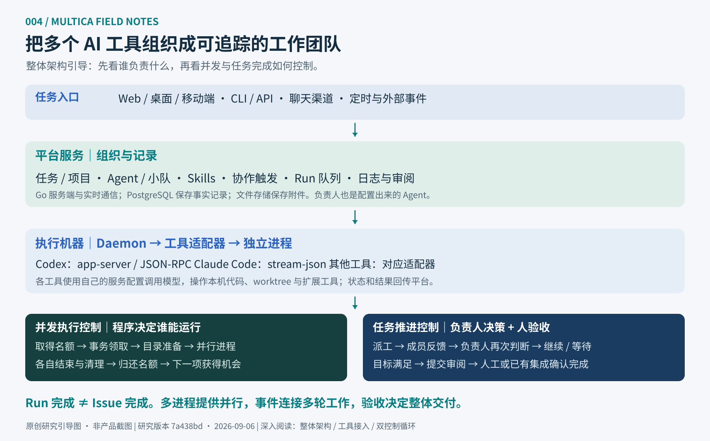

组织工作
任务与项目、Agent 身份、小队角色、Skills 与执行资源。
本页是源码研究与独立教学展示，未运行 Multica 后端或真实模型任务。架构图为原创整理，建议增强项与已有机制分开标注。
01 / WHAT IT ADDS
主要价值是任务组织与运行管理。模型提供推理，Agent 工具负责操作，Multica 把分派、反馈和成果连接起来。
任务与项目、Agent 身份、小队角色、Skills 与执行资源。
触发 Run、路由到 Runtime、领取名额、启动工具进程。
成员反馈触发后续执行，负责人决定下一步或提交审阅。
任务讨论、运行状态、工具调用、用量与成果关联。
Stars · 2026-09-06 快照
关注度说明有人对这个方向感兴趣。多 Agent 管理需求、直观的派工体验与复用工具生态，是本研究认为的吸引力；尚无可靠的增长归因或使用效果数据。
02 / SYSTEM ATLAS
先定位组件与边界，再展开工具协议、并发控制和任务推进。图中的模块是职责划分，不要求全部拆成微服务。

先看入口、平台与执行机，再分别理解并发控制和任务推进。点击图片可打开矢量原图。
下载 PNG ↗03 / UNDER THE HOOD
Daemon 在执行机发现工具并注册 Runtime。Codex 适配器启动 app-server，以 JSON-RPC 通信；Claude Code 使用 stream-json。模型选项交给工具，工具使用自身配置和认证。
查看 Codex 适配源码 ↗机器名额池限制总体并发，服务端事务检查 Agent 容量；不同 Run 对应独立进程。worktree 支持目录隔离，同一 Direct 目录则等待锁。结束并清理后，名额立即可供后续任务使用。
查看 Daemon 源码 ↗负责人通过结构化提及派工，通常结束本轮。成员反馈触发后续 Run，负责人再决定继续、等待或提交审阅。模型负责决策，系统负责执行事实与事件连接。
阅读小队机制 ↗Agent长期身份与执行配置
Runtime机器 + 工具 / 兼容配置
Run一次实际执行
Issue整体目标与交付状态
04 / A SMALL SCHEDULING LAB
负责人先派工，A / B / C 各自工作；完成反馈会触发负责人检查。观察名额释放、目录串行和最终审阅之间的区别。
这是独立教学状态机，省略网络恢复、权限与全部上游路由细节。切换配置会重置演示。真实 Multica 的默认机器 / Agent 上限为 20 / 6；目录等待也可能占用已领取名额。
05 / WHAT WE CAN REUSE
多个独立任务、多个工具、多人协作和多台机器，往往需要统一派工与可追踪反馈。前后端分工、并行审查、跨仓库维护、定时报告，是值得验证的场景。
单人只做一项简单任务时，管理层可能增加额外成本。应测量人工跟进时间、返工率、成果质量与运行费用。
任务预算、派工次数与总时限需要硬性控制；验收检查、成果版本、依赖与集成冲突处理，需要可执行规则。
提示词中的“直到完成”不能代替这些约束。一次 Run 正常结束，也不能代替最终交付验收。
Agent 框架侧重编程构建 Agent；Skills 集合侧重操作方法；模型代理侧重接口与认证。Multica 的研究重点是已有工具的任务管理和运行协作。它们处于不同能力层，不适合只按功能数量比较。
06 / EVIDENCE & BOUNDARIES
固定版本源码、官方文档、进程协议、名额与领取、负责人反馈循环。
证据与源码索引 ↗没有运行 Multica 服务端 / Daemon，没有真实模型任务、生产性能或采用效果测试。
运行与验证记录 ↗上游采用 Multica License，包含 Apache 2.0 和额外条件。本页是原创研究站，不是 Multica 托管服务。
阅读完整上游许可 ↗